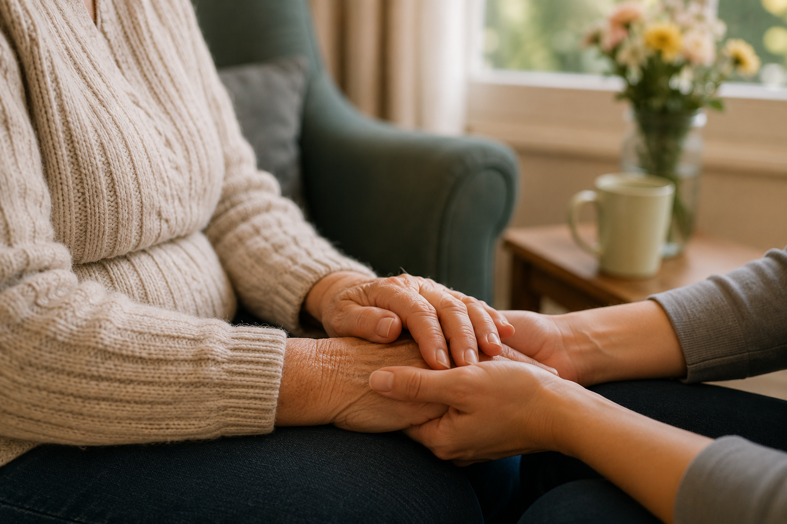

Let them teach you how it was done — a simple, heartwarming way to spark memories and meaningful conversations.

Maria has learned something in two years of caring for Joan. The best conversations don't start with questions like "do you remember?" They start with something simpler — something that puts Joan in charge.
Today she opens Together and taps into The Way We Did It. She chooses The Kitchen, and reads the prompt aloud: "How did you used to make pastry?"
Joan sits up straighter. "Oh, you have to keep everything cold," she says, without hesitation. "Cold hands, cold butter, cold bowl. My mother was very particular about that."
And she's off. Twenty minutes of stories about her mother's kitchen, about baking day, about the smell of the oven on a Saturday morning. Maria hasn't said a word — she's just listening.
This is what The Way We Did It is built for. Everyday tasks from years gone by become a doorway into a lifetime of knowledge, pride, and memory. The hands often remember what the mind cannot. And when someone living with dementia gets to be the expert — even just for a moment — something shifts.
Their stories. Your together.
Together includes The Way We Did It and more conversation games for dementia care.
Try Together